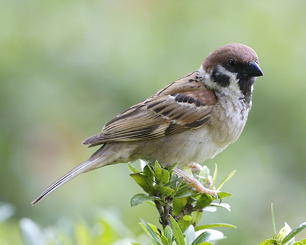
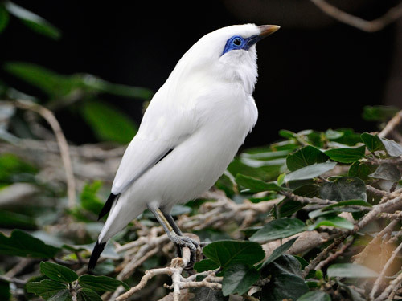
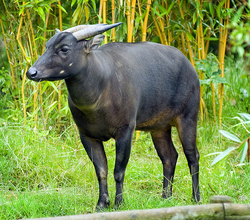
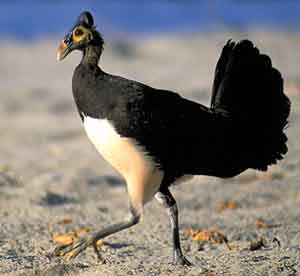
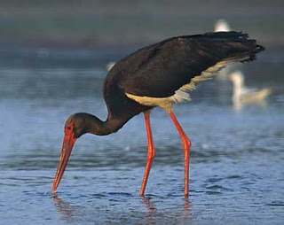
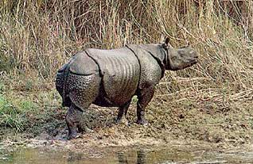
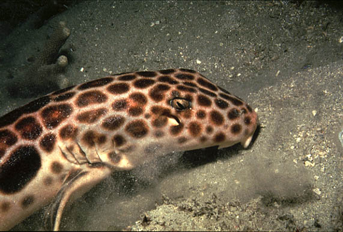
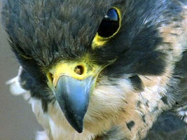

SEPULUH HEWAN ASLI INDONESIA YANG HAMPIR PUNAH
1. Elang Jawa
 Elang Jawa (Spizaetus bartelsi) adalah burung nasional Indonesia karena kemiripannya dengan Garuda dan juga merupakan simbol jenis satwa langka di Indonesia. Elang Jawa hanya terdapat di Pulau Jawa dan penyebarannya terbatas di hutan-hutan. Sebagai predator puncak, Elang Jawa memainkan peran yang penting dalam menjaga keseimbangan dan fungsi dari bioma hutan di Jawa. Elang Jawa merupakan salah satu jenis burung pemangsa terlangka di dunia. Berdasarkan kriteria keterancaman terbaru dari IUCN, Elang Jawa dimasukan dalam kategori Endangered atau “Genting”
Elang Jawa (Spizaetus bartelsi) adalah burung nasional Indonesia karena kemiripannya dengan Garuda dan juga merupakan simbol jenis satwa langka di Indonesia. Elang Jawa hanya terdapat di Pulau Jawa dan penyebarannya terbatas di hutan-hutan. Sebagai predator puncak, Elang Jawa memainkan peran yang penting dalam menjaga keseimbangan dan fungsi dari bioma hutan di Jawa. Elang Jawa merupakan salah satu jenis burung pemangsa terlangka di dunia. Berdasarkan kriteria keterancaman terbaru dari IUCN, Elang Jawa dimasukan dalam kategori Endangered atau “Genting”
2. Jalak bali (Leucopsar rothschildi)
 Panjang: 25 cm, Berat 85-90 gr Populasinya sangat terancam,jalak Bali merupakan salah satu burung paling langka di dunia dan relatif baru bagi ilmu pengetahuan menjadi yang pertama dijelaskan pada 1912 oleh Walter Rothschild. pada jalak bali dewasa memiliki sayap putih dengan strip hitam, ekor tipis dan biru di sekitar mata. Hewan endemik bagi pulau Bali di Indonesia dan sebelumnya ditemukan di sepanjang barat laut dari pulau ketiga.Mendiami hutan monsun dan akasia sabana.3. Anoa Pegunungan (Bubalus quarlesi)
 Panjang kepala-badan: 150 cm, ekor: 24 cm, tinggi bahu: 70 cm, Tanduk: 15 - 20 cm Anoa gunung adalah hewan yg terancam punah, hewan ini adalah subfamili sapi liar, namun karena ukurannya yang kecil, itu lebih mirip dengan rusa. Anoa gunung hewan endemik Indonesia, ada hanya di provinsi Sulawesi dan pulau dekat Buton Sangat sedikit yang diketahui tentang preferensi habitat anoa gunung, karena itu adalah pemalu dan sedikit yg mempelajarinya. Hewan ini diketahui hidup di ketinggian antara 500 dan 2000 meter, namun laporan-laporan berbeda pada habitat lain. Ada yang mengatakan bahwa anoa pegunungan mendiami wilayah hutan lebat yang vegetationally beragam, sedangkan laporan lainnya yang suka area hutan yang relatif terbuka dengan kepadatan tanaman adapun yg mengatakan padadi sekitar daerah terbuka dan sumber-sumber air.5. Maleo (Macrocephalon maleo)
 Ukurannya 55-60 cm. termasuk ke dalam hewan yang terancam populasinya, Habitatnya di sulawesi dan pulau buton. Tinggal di dataran rendah dan pantai Burung mencolok ini memiliki khas kurus, gelap pada mahkota pelindung kepala, wajah berwarna kekuningan. Paha yang hitam, dan perut putih, dengan warna merah muda pada dorsal(dada). Burung langka ini biasanya diam, tetapi, terutama di sekitar sarang sangat menjaga, dapat memancarkan suara sangat luar biasa. Ini termasuk ringkikan keras dan, ketika dalam perebutan, seperti bebek ber-kwek.6. Bangau Hitam
 Masuk dalam suku ciconiidae, bangau tongtong berhabitat asli di Asia, khususnya wilayah India, Indo Cina dan Indonesia kecuali Irian dan Maluku. Mereka menyebar ke Afrika, Myanmar, Hong Kong dan Filipina. Burung berkaki kuat ini senang hidup di daerah rawa, sungai, hutan bakau, sawah, dan hutan terbuka. Kadang juga di daerah tanah kering dan berlumpur. Tubuhnya berwarna hitam, kecuali leher dan perut bagian bawah berwarna putih. Panjang tubuh bisa mencapai 91 sentimeter. Di malam hari, bangau tongtong bertengger di pohon. Spesies ini merupakan satu-satunya bangau yang tidak melebarkan kaki dan sayap pada saat terbang. Mereka termasuk hewan yang mempunyai banyak variasi gaya hidup. Bangau tongtong bisa hidup menyendiri, berpasangan atau kadang berkelompok. Burung yang di daerah Jawa populer dengan nama sandanglawe ini sudah makin sulit ditemui. Mereka termasuk satwa yang dilindungi undang-undang karena mulai terancam punah.7. Badak Jawa
 panjangnya bisa mencapai 2-4 meter, tingginya 170cm dan beratnya mencapai 900 – 2,300 kg. Statusnya sangat terancam, WWF melidungi hewan ini,badak Jawa adalah salah satu mamalia besar paling langka di dunia . Nama rhinoceros berasal dari bahasa Yunani untuk 'nose horn', dan badak Jawa memiliki satu tanduk di moncongnya itu, seperti tanduk badak, tidak memiliki inti yang kurus tapi terdiri dari serat keratin. Dewasa dalam warna abu-abu, dan memiliki penampilan yg berlapis baja disebabkan oleh lipatan dalam kulit berbulu. Kita dapat menemui hewan ini di Taman Nasional Ujung Kulon, Banten.8. Hiu karpet berbintik (Hemiscyllium freycineti)
 Berpola kulit yang indah, hiu ini memiliki kemiripan yang luar biasa dengan kulit macan tutul. Heksagonal cokelat bintik, dengan pusat-pusat pucat, penuh di seluruh tubuh bagia atas. Kecil bintik-bintik gelap menutupi moncong, dan besar, gelap yang terletak tepat di belakang sirip dada. Kedua sirip punggung dan sirip anus ditempatkan di belakang tubuh,pada ekor tebal habitatnya pada air dangkal di terumbu karang, pasir dan rumput laut yang lebat, berada didaerah papua.9. Babirusa Sulawesi (Babyrousa celebensis)
 Tergolong kedalam hewan yang rentan kepunahannya redaftar didalam data hewen yg hampir punah didunia.
Babirusa Sulawesi jelas diketahui menghuni semenanjung utara dan utara-bagian timur Sulawesi, dan jangkauan dapat juga meliputi pusat, timur dan selatan-timur Sulawesi, meskipun studi lanjut pada penggolongan / taksonomi hewan ini diperlukan sebelum hal ini dapat dikonfirmasi. Beratnya mencapai 600kg, Hidup di hutan hujan dan beriklim tropis.
Tergolong kedalam hewan yang rentan kepunahannya redaftar didalam data hewen yg hampir punah didunia.
Babirusa Sulawesi jelas diketahui menghuni semenanjung utara dan utara-bagian timur Sulawesi, dan jangkauan dapat juga meliputi pusat, timur dan selatan-timur Sulawesi, meskipun studi lanjut pada penggolongan / taksonomi hewan ini diperlukan sebelum hal ini dapat dikonfirmasi. Beratnya mencapai 600kg, Hidup di hutan hujan dan beriklim tropis.
10. Alap Alap
 Burung ini termasuk carnivora atau pemakan daging. Salah satu jenis dari alap-alap ini yang populer adalah alap-alap capung. Dia dikenal karena tubuhnya yang kecil. Burung alap-alap capung berparuh kecil, berdarah panas, dan seperti burung pada umumnya, dia membiak dengan cara bertelur. Dikenal sebagai burung karnivora terkecil di dunia, alap-alap capung dapat ditemukan di kawasan Asia Tenggara dengan ukuran rata-rata sepanjang 15 cm dengan berat badan 35 gram.
Tinggalkan Komentar
Berita Paling Banyak Dikomentari